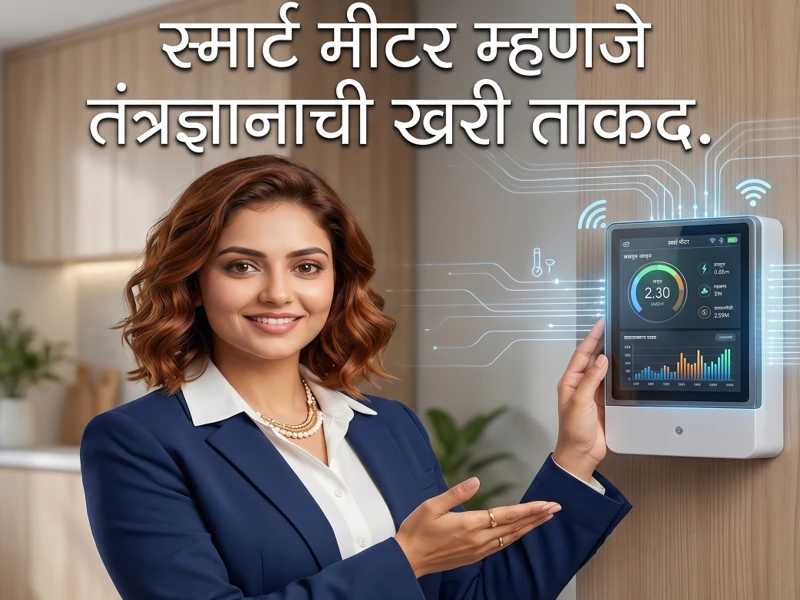

परिचय
आजच्या डिजिटल युगात वीज क्षेत्राचाही वेगाने कायापालट होत आहे. जुन्या पारंपरिक मीटरच्या जागी आता अत्याधुनिक 'स्मार्ट मीटर' प्रणाली तंत्रज्ञानाची नवी क्रांती घडवून आणत आहे. हे स्मार्ट मीटर केवळ वीज मोजण्याचे साधन नसून ग्राहकांना ऊर्जेची बचत करण्यासाठी आणि बिलावर नियंत्रण ठेवण्यासाठी सक्षम बनवणारे एक डिजिटल माध्यम आहे. या लेखामध्ये आपण स्मार्ट मीटरची कार्यपद्धती, त्याचे भन्नाट फीचर्स, अचूक बिलिंग निकष आणि ग्राहकांना मिळणाऱ्या फायद्यांविषयी सविस्तर माहिती जाणून घेणार आहोत.
१. जुन्या मीटरकडून स्मार्ट मीटर प्रणालीकडे प्रवासाची सुरुवात.
Key Takeaways
- जुन्या मीटरमधील त्रुटी आणि मानवी मर्यादा दूर करून ग्राहकांना पारदर्शक सेवा देण्यासाठी स्मार्ट ग्रिड आणि स्मार्ट मीटरचा प्रवास सुरू झाला.
पारंपरिक इलेक्ट्रोमेकॅनिकल आणि साध्या डिजिटल मीटरकडून स्मार्ट मीटरकडे होणारा बदल हा वीज वितरणातील एक ऐतिहासिक टप्पा आहे:
- 1 पारंपरिक मीटरच्या मर्यादा: जुन्या मीटरमध्ये प्रत्यक्ष जागेवर जाऊन रीडिंग घ्यावे लागायचे, ज्यामुळे मानवी चुका (Human Errors) आणि सरासरी बिलिंगच्या समस्या वाढायच्या.
- 2 स्मार्ट क्रांतीची गरज: वीज चोरी रोखणे, रिअल-टाइम लोड मॅनेजमेंट करणे आणि ग्राहकांना त्यांच्या वापराची तात्काळ माहिती देणे या उद्देशाने या आधुनिक प्रवासाची सुरुवात झाली.
तुम्हाला काय वाटते, जुन्या मीटरपेक्षा हा डिजिटल बदल ग्राहकांसाठी अधिक सोयीचा ठरेल का?
२. केवळ एक मीटर नाही, तर तुमच्या घरातील ऊर्जा व्यवस्थापक.
Key Takeaways
- स्मार्ट मीटर तुम्हाला तुमच्या मोबाईल ॲपवर दर तासाचा वीज वापर दाखवून लाईव्ह एनर्जी मॅनेजरसारखे काम करते.
स्मार्ट मीटर तुमच्या घरात एका कार्यक्षम ऊर्जा व्यवस्थापकाची (Energy Manager) भूमिका बजावते. ते खालीलप्रमाणे काम करते:
- रिअल-टाइम ट्रॅकिंग: कोणत्या उपकरणाने किती वीज खाल्ली आणि दिवसाच्या कोणत्या वेळेत जास्त वापर झाला, याचा संपूर्ण डेटा ग्राहकाला उपलब्ध होतो.
- वापरावर नियंत्रण: मोबाईल ॲपच्या मदतीने वापर ठरवून दिलेल्या मर्यादेच्या पलीकडे गेल्यास ग्राहकाला त्वरित अलर्ट मिळतात, ज्यामुळे नको असलेला वापर टाळता येतो.
- बजेट प्लॅनिंग: चालू महिन्याचे वीज बिल किती येऊ शकते याचा अंदाज आधीच मिळत असल्यामुळे ग्राहक आपले बजेट सहज मॅनेज करू शकतात.
लाईव्ह डेटा पाहून घरातील विजेचा अपव्यय थांबवणे आता अधिक सोपे होईल, असे तुम्हाला वाटते का?
३. स्वयंचलित ऊर्जा मापन, म्हणजे मॅन्युअल रीडिंगला सुट्टी!
Key Takeaways
- द्विमार्गी संवादाच्या (Two-way Communication) मदतीने मीटरचे आकडे थेट महावितरणच्या सर्व्हरवर ऑटोमॅटिक अपडेट होतात.
स्मार्ट मीटरमधील ऑटोमेशन तंत्रज्ञानामुळे मॅन्युअल कामातून पूर्णपणे सुटका मिळते:
- 1 रिमोट रीडिंग सिस्टीम: आता कोणताही कर्मचारी तुमच्या घरी रीडिंग घेण्यासाठी येणार नाही. मीटर स्वतःहून दरमहा ठराविक तारखेला अचूक रीडिंग सर्व्हरला पाठवते.
- 2 सरासरी बिलांची कटकट संपली: घर बंद असणे, मीटर उंचीवर असणे किंवा फोटो अस्पष्ट येणे यांसारख्या कारणांमुळे मिळणाऱ्या 'RNA' किंवा 'Average' बिलांचा त्रास आता कायमचा संपुष्टात येईल.
मॅन्युअल रीडिंग बंद झाल्यामुळे बिलिंगमधील पारदर्शकता वाढेल, असे तुम्हाला वाटते का?
४. स्मार्ट मीटरचे असे फीचर्स, जे तुम्हाला थक्क करतील.
Key Takeaways
- प्रीपेड रिचार्ज, लोड डिटेक्शन आणि रिमोट डिस्कनेक्शन यांसारखी आधुनिक फीचर्स स्मार्ट मीटरला अधिक शक्तिशाली बनवतात.
महत्त्वाच्या फीचर्सची वैशिष्ट्ये:
हे मीटर प्रगत 'Advanced Metering Infrastructure' (AMI) तंत्रज्ञानावर काम करते, ज्याचे अनेक फायदे आहेत.
स्मार्ट फीचर्सची संपूर्ण चेकलिस्ट:
- 1 प्रीपेड आणि पोस्टपेड पर्याय: मोबाईलप्रमाणेच मीटरला रिचार्ज करून वीज वापरण्याची (Prepaid) सुविधा, ज्यामुळे थकबाकी राहण्याचा प्रश्नच उरणार नाही.
- 2 रिमोट कनेक्शन कंट्रोल: वीज पुरवठा सुरू किंवा खंडित करण्यासाठी प्रत्यक्ष जागेवर जाण्याची गरज नाही, हे सर्व मुख्य कार्यालयातून डिजिटल पद्धतीने नियंत्रित होते.
- 3 लोड अलर्ट व सुरक्षा: मंजूर लोडपेक्षा जास्त वीज वापरली गेल्यास किंवा अंतर्गत वायरिंगमध्ये शॉर्ट सर्किट सारखा दोष निर्माण झाल्यास मीटर तात्काळ वीज खंडित करून मोठी दुर्घटना टाळू शकते.
- 4 अँटी-टॅम्परिंग अलार्म: मीटरशी कोणत्याही प्रकारची छेडछाड करण्याचा प्रयत्न केल्यास मुख्य सर्व्हरला सेकंदाच्या आत अलर्ट जातो.
प्रीपेड रिचार्जचा पर्याय ग्राहकांना त्यांचा खर्च मर्यादित ठेवण्यास मदत करेल का?
५. स्मार्ट मीटरमुळे वीज बिलिंगमध्ये नवे अचूक मानदंड.
Key Takeaways
- डिजिटल डेटा प्रोसेसिंगमुळे बिलातील गणितीय चुका १००% नाहीशा होऊन ग्राहकांना अचूक आणि वेळेवर बिले मिळतात.
स्मार्ट मीटरमुळे वीज बिलिंग पद्धतीमध्ये मोठे गुणात्मक बदल घडून आले आहेत, ज्याची तुलना खालील तक्त्यावरून स्पष्ट होते:
| वैशिष्ट्ये/निकष | पारंपरिक बिलिंग पद्धत | स्मार्ट मीटर बिलिंग पद्धत |
|---|---|---|
| रीडिंग अचूकता | मानवी नोंदींमुळे चुकांची शक्यता (Punching Errors). | थ्रेट सर्व्हर फीडिंगमुळे १००% अचूक आणि डिजिटल डेटा. |
| बिल जनरेशन | दरमहा रीडिंग घेतल्यावर ७ ते १० दिवसांनी बिल मिळते. | ॲपवर दररोजचा अचूक वापर आणि बिलिंग डेटा उपलब्ध. |
| तक्रार निवारण | बिल दुरुस्तीसाठी कार्यालयाचे उंबरठे झिजवावे लागतात. | डेटा ऑनलाईन असल्याने त्रुटींचे तात्काळ डिजिटल निवारण. |
या तुलनात्मक कोष्टकावरून स्मार्ट बिलिंगमधील अचूकता आता तुम्हाला स्पष्ट झाली का?
महत्त्वाचे निष्कर्ष
स्मार्ट मीटर हे ग्राहकांच्या विरोधात नसून, त्यांना त्यांच्या वीज वापराचा रिअल-टाइम डेटा देऊन जागरूक बनवणारे एक पारदर्शक माध्यम आहे.
स्वयंचलित प्रणालीमुळे मॅन्युअल रीडिंगमधील चुका, चुकीची सरासरी बिले आणि दंडात्मक भुर्दंड यांपासून ग्राहकांची कायमची सुटका होते.
प्रीपेड आणि लोड मॅनेजमेंट यांसारख्या फीचर्समुळे ग्राहकांना आपल्या बजेटनुसार वीज वापरण्याचे संपूर्ण स्वातंत्र्य मिळते.
पुढचं पाऊल:
तुमच्या भागात स्मार्ट मीटर बसवले असल्यास, महावितरणचे अधिकृत मोबाईल ॲप त्वरित डाऊनलोड करा. आपला ग्राहक क्रमांक लिंक करून दररोजच्या वापराचे विश्लेषण करा आणि प्रीपेड किंवा इतर स्मार्ट फीचर्सचा वापर करून वीज व पैशांची बचत करण्यास आजपासूनच सुरुवात करा.
People Also Ask
शासकीय योजना आणि सुधारित वितरण क्षेत्र योजने अंतर्गत (RDSS) बहुतांश ठिकाणी हे मीटर मोफत बदलून दिले जात आहेत. यासाठी ग्राहकांकडून कोणतेही थेट रोख शुल्क आकारले जात नाही.
नाही, हा केवळ एक गैरसमज आहे. स्मार्ट मीटर केवळ तितकाच वापर नोंदवते जितकी वीज उपकरणे वापरतात. उलट ते जुन्या मीटरपेक्षा अधिक संवेदनशील आणि अचूक असते.
नाही, नेटवर्क नसले तरी मीटरमधील अंतर्गत मेमरीमध्ये तुमचा वीज वापर सुरक्षितपणे रेकॉर्ड होत राहतो. नेटवर्क पूर्ववत होताच हा डेटा मुख्य सर्व्हरला आपोआप पाठवला जातो.
ग्राहकांच्या सोयीसाठी नियमानुसार रात्रीच्या वेळी, शासकीय सुट्ट्यांच्या दिवशी किंवा वीकेंडला बॅलन्स संपला तरी वीज पुरवठा खंडित केला जात नाही. यासाठी विशिष्ट 'ग्रेस पिरियड' दिला जातो.